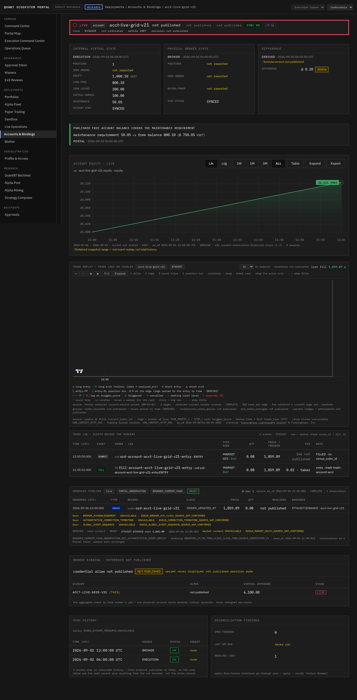
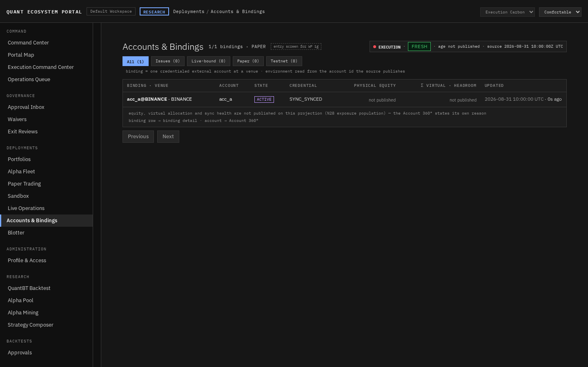

/deployments/accounts/:id — preview build, 1440px, BFF-double sample data. Switch to “What changes” to see the proposal marked against it.
/deployments/accounts. Not redesigned in this wireframe.Binance-02 sleeve
Logical account / sleeveUSDT · real-funded 2Logical account / sleeve Internal
- Name · ID
- Binance-02 sleeve · acct-l-0092
- Portfolio
- Core
- Domain · currency
- Real-funded · USDT
- Deployments
- 1 live · live-0192
Physical venue binding Native 3
- Venue · binding ID
- Binance · bind-p-0031
- Native account
- Sub-account …4f2a (masked)Not available Binding proof not loaded
- Product · position
- USDT-M futures · hedge modeNot available Binding proof not loaded
- Margin mode
- CrossNot available
- Environment proof
- Mainnet · verified 09:12Not available
Mode is read from venue proof, never guessed from the account name.
Internal ledger This sleeve
| Unrealized PnL | +700.00— |
Venue native custody Whole physical account
| Native equity | 414,010.40— |
PM capital & exposure This sleeve
| Budget approved | 100,000.00— |
| Budget used | 80,000.00— |
| Gross exposure | 96,400.00— |
| ↳ Long / Short | 61,300 / 35,100— |
6 Three authorities, three scopes. They are never added, subtracted or labelled as alpha capital. No "native minus internal" remainder exists in this screen.
Sleeves on this binding Physical 7
| Logical sleeve | Portfolio | Internal balance | Attributable native metrics |
|---|---|---|---|
| Binance-02 sleeve this | Core | 88,200.00— | Not availableNo attribution source |
| Binance-02b sleeve | Satellite | 61,400.00— | Not availableNo attribution source |
| Binance-02c sleeve | Canary | 47,900.00— | Not availableNo attribution source |
Rows are not totalled and the native balance is not split among them. Other sleeves are listed because your role may see them.
Other sleeves on this venue account are not shown to your role.
Margin & native risk Whole account 8
| Margin mode | CrossNot available |
| Margin ratio | 5.1%Not available |
| Maintenance margin | 21,300.00Not available |
| Available margin | 301,100.00Not available |
Covered Available margin covers the maintenance requirement.
Cross margin at the venue does not prove that logical portfolios are protected from each other in a liquidation.
Account equity This sleeve · internal ledger
Positions & open orders
| Symbol | Long notional | Short notional | Gross | Open orders |
|---|---|---|---|---|
| BTCUSDT | 61,300.00 | 35,100.00 | 96,400.00 | 4 |
Gross is long plus short. Hedge legs are never netted silently. USDT only.
Physical-account positions: Not available No source attributing native positions to sleeves is published
| Alpha / version | Deployment | Stage | Allocation (USDT) |
|---|---|---|---|
| BTC-Trend v3 | live-0192 | Live | 80,000.00 |
Allocations are PM-side, logical, one partition. They do not claim any share of the native balance.
| Fees | 388.20Not available |
| Funding | 224.20Not available |
| Borrow / interest | Not availableSource not published |
Window 30D, this sleeve. USDT.
| Check | Scope | Result | Difference (derived) | Last run |
|---|---|---|---|---|
| Balance ↔ ledger | This sleeve | Reconciling | Not computedNative balance spans all sleeves | 09:12 |
| Positions ↔ venue | This sleeve | Matched | Δ 0 | 09:12 |
| Open orders ↔ venue | This sleeve | Matched | Δ 0 | 09:12 |
Differences and receipts open in Operations. A balance difference is not derived on a shared binding, because the native balance covers every sleeve.
| Time | Event | Actor | Receipt |
|---|---|---|---|
| 09 Oct 14:20 | Budget approved 100,000.00 | bjones | rc-8790 |
| 07 Oct 08:00 | Binding verified (mainnet) | system | rc-8741 |
What changes vs today — Account 360 (/deployments/accounts/:id)
| Region | Today (V1, from the screenshot) | Proposed | Why · needs backend | |
|---|---|---|---|---|
| KEPT | Route and account equity chart | /deployments/accounts/:id; “Account equity · LIVE” chart with Lin / Log / 1W / 1M / 3M / ALL / Table / Expand / Export | Same route and chart toolbar; adds a scope label (this sleeve, internal ledger) | Existing behaviour is right. |
| CHANGED | Header and sync chip | One banner: LIVE shield, ACCOUNT tag, name, three raw “not published”, SYNC OK chip, WF tag, line “live · BINANCE · … settle USDT · revision not published” | Two identities side by side: logical sleeve (internal) and physical venue binding (native), with freshness and reconciliation chips apart | Guide §10. Mode comes from binding proof, not from the name. |
| NEW | Shared-binding warning | Nothing says the physical account may serve several sleeves | Warning above all figures; hides the sleeve count from researchers | Needs the binding-to-sleeve relation. |
| CHANGED | Three columns | Internal virtual state | Physical broker state | Difference; rows such as open orders and buying power read “not reported” | Internal ledger | Native custody | PM capital and exposure, each with a scope tag; never summed | Guide §10: native balance is never alpha capital. |
| REMOVED | Difference column | “Difference” column: derived Δ 0.20 with WARN, “formula version not published” | No balance difference on a shared binding; a difference appears in Reconciliation only for matching scopes (positions, orders) | Flag for Bobby: V1 shows a balance Δ today; confirm dropping it is right for shared bindings. |
| CHANGED | Maintenance coverage verdict | Green banner “free account balance covers the maintenance requirement” (50.05 vs 800.10) | A “Covered” line inside the margin card at whole-account scope | Same verdict, now labelled with its scope. |
| NEW | Sleeves on this binding | None | Table of sleeves with internal balances and “Not available” attribution; no total | Needs attribution source; hidden from researchers. |
| CHANGED | Layout | Stack of panels on one scrolling page | Overview first; positions, allocations, fees, reconciliation and audit in tabs | Progressive disclosure. |
| KEPT | Accounts & Bindings list (not redesigned here) | Columns Binding · Venue, Account, State, Credential, Physical equity, Σ Virtual · Headroom, Updated; filter tabs All / Issues / Live-bound / Paper / Testnet | Not drawn in this wireframe | Needs its own design; “Physical equity” beside “Σ Virtual” per binding is where a shared-balance mix-up could happen. |
| CHANGED | Missing-data wording | “not published”, “not reported”, “formula version not published”, “revision not published” | “Not available” plus a short reason; codes in a tooltip | Needs the public copy dictionary (FE-015). |